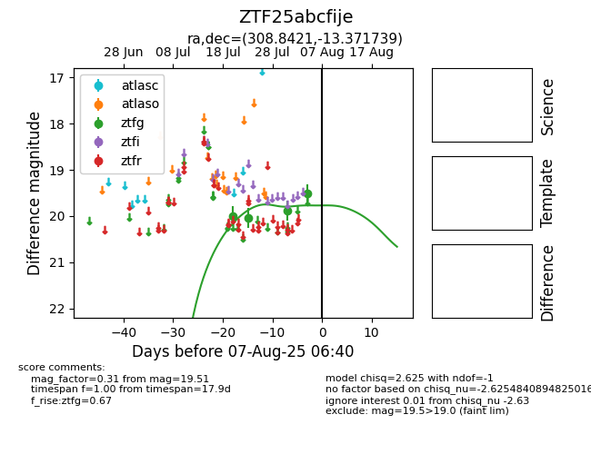

Target ZTF25abcfije at 2025-08-07 07:30, see:
FINK: fink-portal.org/ZTF25abcfije
Lasair: lasair-ztf.lsst.ac.uk/objects/ZTF25abcfije
ALeRCE: alerce.online/object/ZTF25abcfije
alt names
ZTF25abcfije (ztf,fink)
coordinates:
equatorial (ra, dec) = (308.8421,-13.37174)
galactic (l, b) = (32.1801,-28.99848)
photometry
last ztfg=19.51
4 ztfg detections
